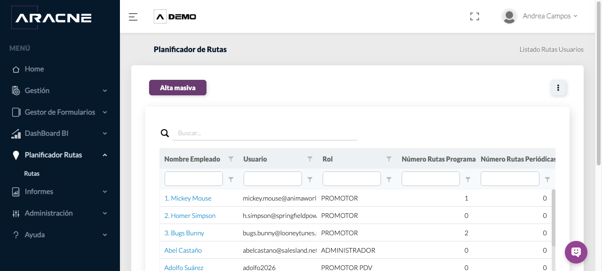
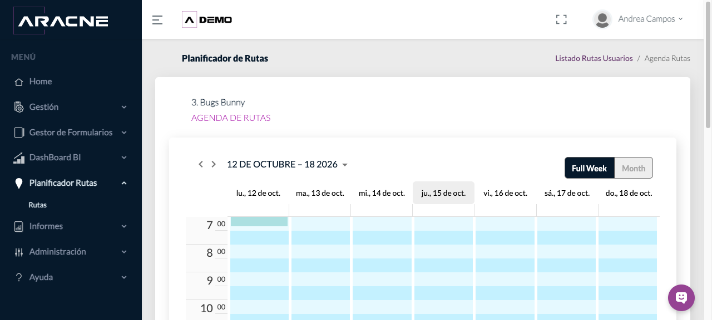
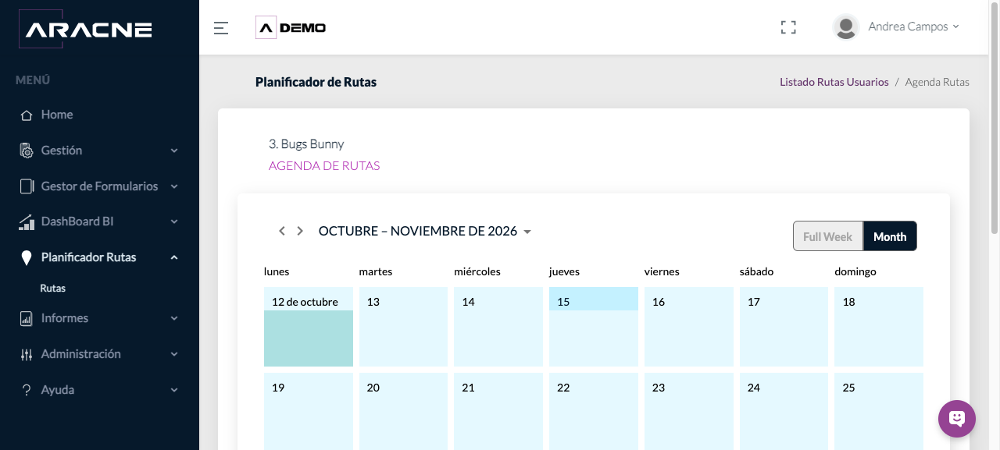
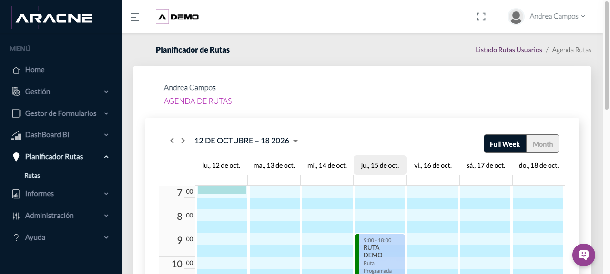
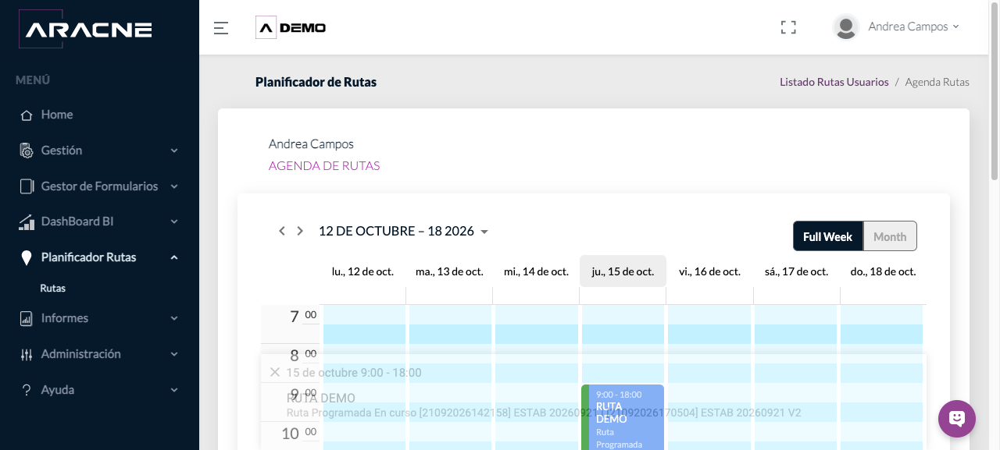
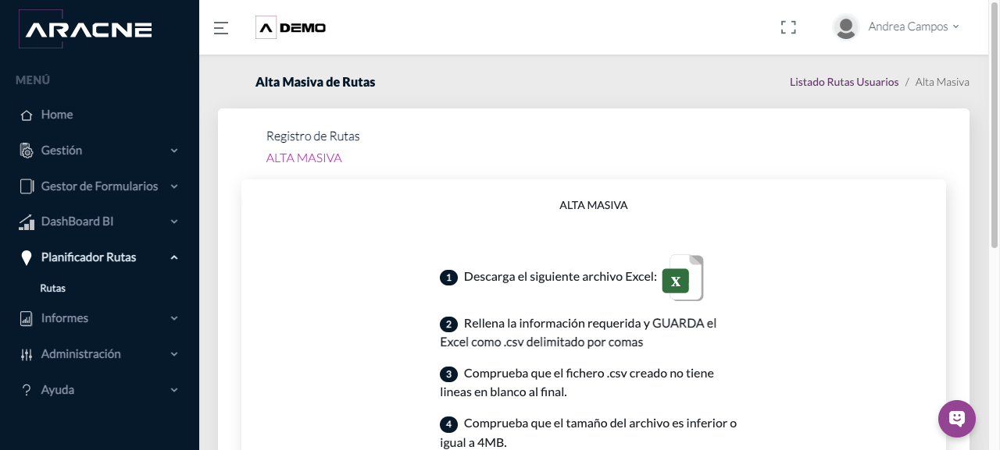
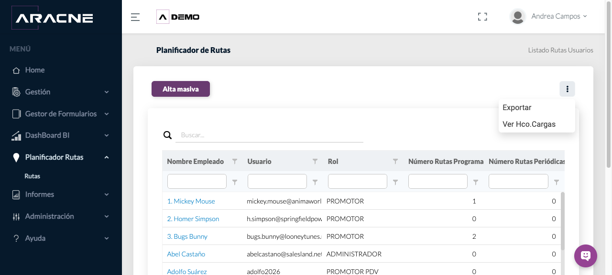
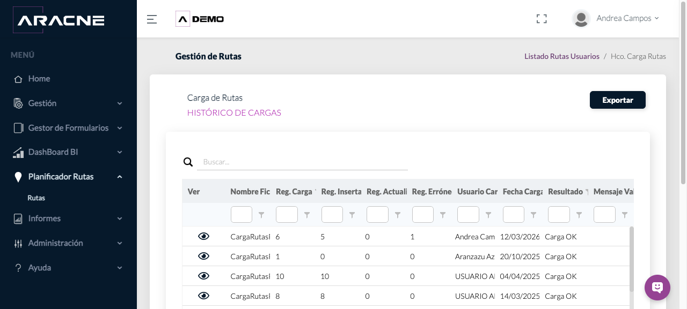
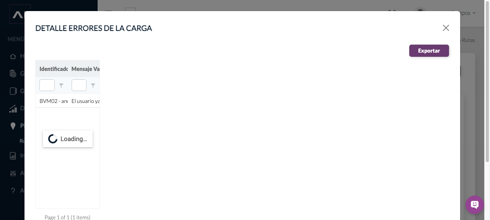

Planificador de rutas
Consultar la agenda de rutas de cada usuario, cargar rutas programadas y revisar los resultados de las importaciones.
Los usuarios y los PDV deben existir en la campaña. Los PDV utilizados en una ruta deben estar disponibles para el usuario correspondiente.
Dónde estáPlanificador Rutas › Rutas.
Contenido disponibleEl listado distingue Rutas Programadas y Rutas Periódicas mediante contadores. La creación disponible en este recorrido es el alta masiva de rutas programadas.
Consultar usuarios y contadores de rutas
- Abre Planificador Rutas › Rutas. El listado muestra Nombre Empleado, Usuario, Rol, Número Rutas Programadas y Número Rutas Periódicas.

Paso 1. Usuarios de ESPAÑA - DEMO con sus contadores de planificación. - Utiliza Buscar o los filtros de columna para localizar al usuario. El listado contiene 53 usuarios distribuidos en varias páginas.
Paso 2. Buscador general y filtros de cada columna. - Compara los dos contadores: Programadas recoge rutas asociadas a fechas concretas y Periódicas las rutas recurrentes existentes.
Paso 3. Columnas de rutas programadas y periódicas por usuario.
Consultar la agenda de un usuario
- Pulsa el nombre del empleado para abrir su Agenda de Rutas.
Paso 1. Los nombres de empleado funcionan como acceso al calendario. - Utiliza las flechas del calendario para cambiar de periodo. La vista Full Week presenta los siete días y las horas entre las 07:00 y las 23:00.

Paso 2. Vista semanal del usuario seleccionado. - Selecciona Month para consultar el calendario mensual y vuelve a Full Week para revisar las horas de cada visita.

Paso 3. Vista mensual de la planificación. - Cuando existe una ruta, el bloque muestra la franja, el nombre, el tipo, el estado y los establecimientos incluidos.

Paso 4. RUTA DEMO situada entre las 09:00 y las 18:00. - Pulsa el bloque de la ruta para desplegar su resumen dentro del calendario. Comprueba fecha, horario, tipo, estado y PDV asociados.

Paso 5. Resumen desplegado de una ruta existente.
Cargar rutas programadas de forma masiva
- Desde el listado, pulsa Alta masiva.
Paso 1. Botón Alta masiva situado sobre el listado. - Descarga la plantilla oficial CargaRutasProgramadas.xlsx. Sus columnas son codigoPdv, usuario, nombreRuta, fechaJornada, tipoJornada, horaInicioJornada, horaFinJornada, horaInicioExtra y horaFinExtra.

Paso 2. Descarga de la plantilla y requisitos de preparación. - Completa la plantilla y guárdala como CSV delimitado por comas. El fichero no debe tener líneas en blanco al final y debe pesar 4 MB o menos. Las mayúsculas y minúsculas se tratan como equivalentes.
Paso 3. Indicaciones mostradas antes de subir el CSV. - Pulsa Subir Archivo y selecciona el CSV preparado. Después consulta el histórico para comprobar el resultado.
Paso 4. Control de selección del archivo al final del procedimiento.
Exportar y revisar el histórico de cargas
- Abre el menú de tres puntos. Contiene Exportar y Ver Hco.Cargas.

Paso 1. Acciones Exportar y Ver Hco.Cargas. - Pulsa Exportar para descargar el listado de usuarios y contadores en ListadoRutasUsuarios.xls.
Paso 2. Opción Exportar del menú principal. - Selecciona Ver Hco.Cargas. El histórico muestra fichero, registros cargados, insertados, actualizados y erróneos, usuario, fecha, resultado y mensaje de validación.

Paso 3. Cargas OK y KO con sus recuentos y mensajes. - Pulsa el icono del ojo en una carga para abrir Detalle errores de la carga. El detalle identifica el registro y explica la causa del error.

Paso 4. Ejemplo de un PDV ya asignado en la jornada diaria. - Utiliza Exportar en el histórico o en el detalle cuando necesites trabajar con los resultados fuera de Aracne.
Paso 5. Botón Exportar del detalle de errores.
Campos y controles principales
- Número Rutas Programadas: contador de rutas asociadas a fechas concretas.
- Número Rutas Periódicas: contador de rutas recurrentes existentes.
- Full Week / Month: vistas semanal y mensual de la agenda.
- codigoPdv: código del establecimiento incluido en la carga.
- usuario: cuenta a la que se asigna la ruta.
- fechaJornada: fecha a la que corresponde la ruta.
- tipoJornada: modalidad indicada en la plantilla.
- horaInicioJornada / horaFinJornada: límites horarios de la jornada.
- horaInicioExtra / horaFinExtra: tramo adicional cuando corresponda.
Resultado esperado y comprobación
El usuario aparece con sus contadores actualizados y puede consultarse la ruta en su agenda, con horario, estado y establecimientos.
Después de una carga, comprueba el resultado en Ver Hco.Cargas y abre cualquier registro erróneo. Localiza luego al usuario y revisa su agenda en la fecha correspondiente.
Problemas habituales
- Si una carga falla, revisa que usuario, código de PDV, fecha y horas coincidan con datos existentes.
- Si aparece “El usuario ya tiene el PDV asignado en la jornada diaria”, revisa la ruta existente antes de volver a cargar el establecimiento.
- Si una agenda parece vacía, cambia de semana o utiliza Month; el contador puede incluir rutas de otros periodos.
- Si un PDV no puede asignarse, comprueba su relación con el usuario en Asignación PDV–usuarios.
- Si necesitas corregir varios registros, exporta el detalle, ajusta el CSV y repite la carga.